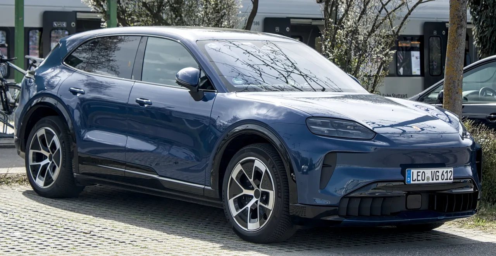
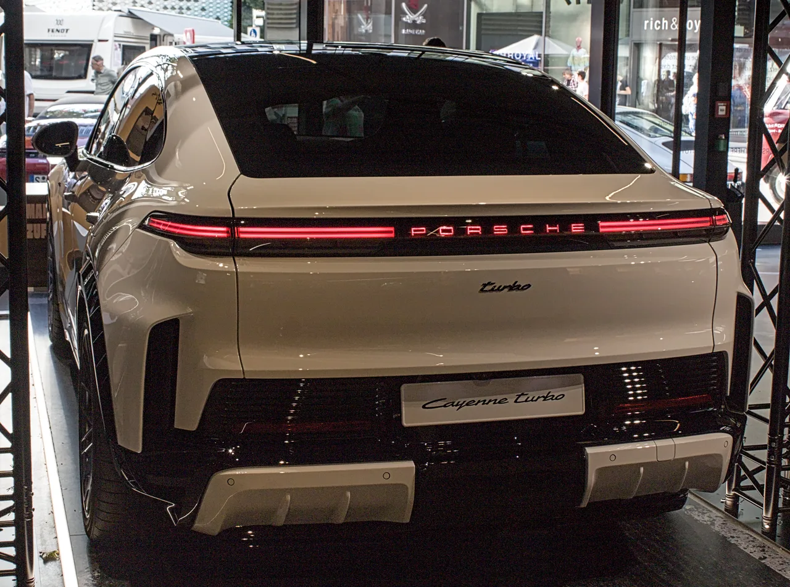

▲ 포르쉐 카이엔 일렉트릭. 터보 일렉트릭은 같은 신형 전동화 플랫폼에 듀얼모터를 얹은 최상위 트림이다 ⓒ Charles, Wikimedia Commons (CC0)
미국 자동차 매체 카스쿠프스(Carscoops)에 따르면 포르쉐 카이엔 터보 일렉트릭이 공차중량 약 2,703kg(약 6,000파운드)에도 불구하고 0→96km/h(0-60mph) 가속을 2.1초 만에 끝냈다. 이는 1,064마력 슈퍼차저 V8을 얹은 쉐보레 콜벳 ZR1의 2.2초보다 0.1초 빠른 기록이다. 3톤에 가까운 대형 SUV가 미국을 대표하는 순수 스포츠카를 가속 구간에서 앞선 셈이다.
| 항목 | 포르쉐 카이엔 터보 일렉트릭 | 쉐보레 콜벳 ZR1(참고) |
|---|---|---|
| 0→96km/h(0-60mph) | 2.1초 | 2.2초 |
| 최고출력·토크 | 1,139마력 · 1,106lb-ft | 1,064마력 |
| 공차중량 | 약 2,703kg | 약 1,560kg(추정) |
| 70mph 제동거리 | 140피트(약 42.7m) | - |
| 스키드패드 | 1.05g | - |
1. 듀얼모터 1,139마력, 탄소세라믹 브레이크까지

▲ 카이엔 일렉트릭 후면부. 전후 듀얼모터 구성으로 대형 SUV임에도 슈퍼카급 가속을 낸다 ⓒ Alexander Migl, Wikimedia Commons (CC BY-SA 4.0)
카이엔 터보 일렉트릭은 전후 듀얼모터 구성으로 최고출력 1,139마력, 최대토크 1,106lb-ft(약 1,499Nm)을 낸다. 여기에 탄소세라믹 브레이크를 조합해 시속 70마일(약 113km/h)에서 정지까지 140피트(약 42.7m)만에 멈춰서는 제동 성능을 확보했다. 스키드패드 테스트에서는 1.05g의 횡가속도를 기록해, 대형 전동 SUV로서는 이례적인 코너링 한계를 보여줬다는 것이 외신의 평가다.
기존 내연기관 카이엔 터보 GT가 4.0L V8 트윈터보로 스포츠카에 준하는 가속력을 내세웠다면, 터보 일렉트릭은 배터리와 모터만으로 그보다 더 빠른 반응 속도를 구현했다는 점이 눈에 띈다. 전기모터 특유의 즉각적인 토크 전달이 2.7톤에 달하는 육중한 차체를 밀어붙이는 원동력이다.
2. 인테리어는 12가지 조합 — 취향껏 고르는 마감재

▲ 카이엔 쿠페 일렉트릭 터보. 쿠페형 차체도 동일한 파워트레인과 인테리어 옵션을 공유한다 ⓒ Alexander Migl, Wikimedia Commons (CC BY-SA 4.0)
카이엔 일렉트릭은 실내 마감에서도 선택 폭을 크게 넓혔다. 최대 12가지 인테리어 조합에 인테리어 패키지 5종, 액센트 패키지 5종을 조합할 수 있어 사실상 수십 가지 실내 분위기를 연출할 수 있다. 특히 눈에 띄는 옵션은 블랙과 델가다 그린 투톤 가죽 마감으로, 도어 트림부터 14방향 전동 조절식 컴포트 시트까지 동일한 색상 조합이 확장 적용된다. 기존 가솔린 카이엔과 비교해도 전동화 모델에 더 다양한 마감 옵션이 배정된 점은, 포르쉐가 전동화 라인업을 단순한 파생 모델이 아니라 별도의 플래그십으로 취급하고 있다는 신호로 읽힌다.
3. 국내는 하반기 출시, 가격은 1억 8,960만 원부터
포르쉐코리아는 2026년 3월 신년 기자간담회에서 카이엔 일렉트릭을 국내 최초 공개했으며, 하반기 출시를 예고한 바 있다. 국내 판매 가격은 기본형 카이엔 일렉트릭이 1억 4,230만 원부터, 이번에 화제가 된 카이엔 터보 일렉트릭은 1억 8,960만 원부터 책정됐다. 미국 시장 기준 카이엔 터보 일렉트릭의 기본가는 16만 5,350달러(약 2억 3,000만 원대)로, 국내 가격이 상대적으로 낮게 책정된 점도 눈에 띈다. WLTP 기준 주행거리는 트림에 따라 최대 642km(카이엔 일렉트릭)에서 623km(터보) 수준으로 알려졌다.
국내에는 800V 전장 구조와 초급속 충전을 지원하는 전용 충전 인프라가 함께 안내될 예정이며, 정확한 출고 일정과 사전계약 방식은 하반기 공식 발표를 통해 확정된다. 기존 내연기관 카이엔과 병행 판매되는 구조라, 전동화 모델과 가솔린 모델 사이에서 트림을 고민하는 구매자도 적지 않을 전망이다. 포르쉐파이낸셜서비스코리아를 통한 금융 프로그램도 함께 안내될 예정이어서, 초기 계약금 부담을 낮추려는 구매자라면 금융 조건도 함께 비교해볼 만하다.
4. 정리 — 슈퍼카를 이긴 SUV, 실구매 관점에서는?
이번 기록의 핵심은 "대형 SUV가 슈퍼카를 이겼다"는 화제성이지만, 실구매 관점에서는 국내 가격이 1억 4,000만~1억 9,000만 원대에 형성된다는 점이 더 중요하다. 순수한 가속 성능만 원한다면 콜벳 ZR1 같은 스포츠카가 여전히 대안이 될 수 있지만, 4인 이상 탑승과 적재 공간, 전동화 SUV의 정숙성을 함께 원하는 구매자에게는 카이엔 터보 일렉트릭이 사실상 유일한 선택지에 가깝다.
다만 하반기라는 시점만 공개됐을 뿐 구체적인 사전계약 시작일과 초기 배정 물량은 아직 확정되지 않았다. 신차 출시 초기에는 물량이 제한적인 경우가 많은 만큼, 관심 있는 구매자라면 포르쉐 공식 딜러를 통해 사전계약 오픈 시점을 미리 확인해두는 것이 좋다.